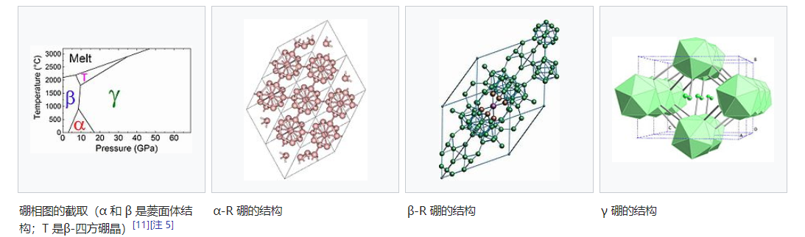

硼有多种同素异形体，包括晶体和无定形体。现已知（已制备）的结晶状硼有α菱面体硼晶、β菱面体硼晶以及β四方硼晶；此外，在某些特定情况下，α四方硼晶、γ正交硼晶等同素异形体结构也能被制备出来。非结晶体的形式有两种已知，一种为精细粉末，另外一种为玻璃状的固体[1][2]。虽然有至少14种甚至更多的硼同素异形体被发表出来，但是这些被发现的组成却是根据不足的证据、没有经过实验确认、被认为是混合的同素异形体或是含有杂质来稳定其硼的结构[3][2][4][5]。而硼以β菱面体硼晶形式存在者是最稳定的，其余次之，所以在室温下的转化率低下，也因此五个不同型态能够在室温下共存。非结晶粉末状硼和多晶体的β菱面体硼晶最为相似，后者是一种坚硬的[注 1]灰料，重量却比铝还要轻上十个百分点，其熔点（2080 °C）比钢高几百度[6]。
元素态的硼能在星尘及陨石找到，但却不存在于地球上含氧量高的环境。因为它不容易从其化合物中被萃取出来。早先的萃取方法包含将三氧化二硼以如镁 或 铝的晶属还原。但是，此方法产物容易混杂其余金属硼化物。现今硼纯化是在高温下以氢还原挥发性卤化硼[7][8]。而半导体产业是用之非常纯的硼之制备，是在高温下以区熔或是柴可拉斯基法分解乙硼烷[9]。从纯硼中制备硼单晶则更加困难，原因是多态现象以及硼倾向与杂质反应；典型的晶体大小为~0.1 mm[10]。
| 硼的型态 **α- | R** **α- | T** **β- | R** **β- | T** **γ* | * **非结 | 晶体** | |
| 粉末 ** | 玻璃状** | ||||||
| 对称 三方 | 晶系 四方晶系 | 三方晶系 | 四方晶系 | 正交晶系 | 半随机 | 半随机 | |
| 发生率 常见 | 特别 | 常见 | 常见 | 特别 | |||
| 原子/晶胞大小[11] 12 | 50 | 105‒10 | 8 192 | 28 | |||
| 密度（g/cm3）[1] 2.46 | 2.29 | ‒2.39[12] 2.35 | 2.36 | 2.52 | 1.73 | 2.34 | –35 |
| 维氏硬度试验（GPa）[13][14] 42 | 45 | 50–58 | |||||
| 体积模量（GPa）[14][15] 224 | 184 | 227 | |||||
| 能隙（eV） 2[[ | 16]](#cite_note-FOOTNOTEMadelung198310-17) | 1.6[ | [17]](#cite_note-FOOTNOTEMadelung198311-18) ~2. | 6[18] 2.1[ | [14]](#cite_note-FOOTNOTEZarechnayaDubrovinskyDubrovinskaiaFilinchuk2009-15) 0.56 | –0.71[19] | |
| 颜色 晶体 | 为明亮的红色[20] 黑色及不透明, 有金 | 属光泽[21] 深色至闪亮的银灰色[[1]](#cit | e_note-FOOTNOTEWiberg2001930-1)[2] 黑/红[注 2][[ | 22]](#cite_note-FOOTNOTEDonohue198278-24) 深灰色[[23]](#cite_note-FOOTNOTEOg | anovChenMaGlass2009863%E2%80%9364-25) 黑色至棕色[注 3] | 不透明的黑色[[1]](#cite_note-FOOTNOTEWiberg200 | 1930-1) |
| 发表时间[24] 1958 | 1943 | /1973[注 4] 1957 | 1960 | 2009 | 1808 | 1911[ | [25]](#cite_note-29)[26] |

α菱面体硼晶是含有12个硼原子的单胞体。这些B12的单胞体结构上为每一个单胞体与邻近的五个单胞体结合的正二十面体结构 。如果这些键结是常规下的共价键，则每个硼贡献出五个电子。但是硼只有三个价电子，所以科学家们认为B12正二十面体是由3-中心电子缺乏键结形成的，意思为电子电荷会累积在三个邻近原子构成的三角形中心[15]。
单一的 B12 正二十面体不稳定；虽然硼并非分子化合物，但是它却含有（非常规的）共价键。
纯α四方硼晶的合成只能在等向性碳化硼（B50C2）或氮化物（B50N2）的底层基质板上发生，α四方硼晶会沉积在比层基质板上形成一层薄膜[1]。而大部分α四方硼晶的合成实例[27]发生在富含硼的碳化物或氮化物[28][29]。
β菱面体硼晶为含有105-108个硼原子的单胞体。大多数的原子组成 B12 离散二十面体；少数组成部分相互贯穿的二十面体，其中包含两个三角面多面体型的B10单元，以及一个中心硼原子[30]。在以前，研究者不甚明了在普通环境下α或β两个结构何者才是最稳定态，但后来对此渐渐取得了共识，β结构于热力学上为最稳定的同素异形体[11][31][32]。
1960年，科学家在摄氏温度1270–1550 °C环境下于热钨丝、铼丝或钽丝上以氢还原BBr3（即化学气相沉积）合成了β四方硼晶[33]。后来的研究更重新进行了此合成并确认产物中没有杂质[34][35][36][37]。
![γ-硼：文托夫的X-光衍射数据[38]（下）与现代数据（上）比较[[11]]
此γ-态为一种像氯化钠的晶体排列著的B12二十面体及B2两种形式原子。可借由压缩别种型态的硼至12–20 GPa和加热到1500–1800 °C而生成，并在环境下维持稳定[11][14]。证据证明在这种结构中有明显的电荷从B2原子对移转至B12二十面体[11]，由晶格动力学也可推测出此种显著的远距离静电相互作用。
文托夫于1965年发表此态的硼[38][39]，然而此硼的结构与化学组成皆不确定。其结构是通过“从头计算法”晶体结构预测计算[11]后再以X射线晶体学手段确认的[14]。
Sullenger等在1969年[34]以及 McConville 等在1976年[40]中阶发表了此种于氩等离子实验中观察到的立方体硼同素异形体。此立方体硼为含有1705±3个原子，密度为2.367 g/cm3的单胞晶体。虽然这种同素异形体偶尔会在文献中被提及到[41]，但是没有后续的正式出版、研究确认或是任何证据否决这种同素异形体的存在。多诺霍于1982年提到[42] 这种单胞晶体内的的原子数量不显示它与正二十面体相关（正二十面体是硼同素异形体共同的结构形状）。
将硼加压至超过160 GPa会产生一种尚未明了的型态。 与其他型态不同，这种硼不是半导体，而是金属，并且有超导现象，临界温度在160 GPa 下为4 K、250 GPa 时上升到11 K[43]。这种压力下的结构转变发生在理论预测的二十面体分解时[44]。揣测下的结构状态包含面心立方（类似于Al），α-Ga，和体心四方（类似于In）[45]。它也被认为其非金属-金属的转变和碘的转变一样，是一个简单的能隙关闭的结果，而非结构的转变[46]。
这种似球形的同素异形体分子硼球烯（B40）于2014年七月被发表[47]。
非晶体硼包括B12 二十面体，会没有固定顺序的互相随机结合[48]。 纯的非晶体硼以再1000 °C以下热分解乙硼烷生成。在1000 °C 时以退火处理会将非晶体硼转变为β菱面体硼晶[49]。非晶体硼的奈米线（直径30-60 nm）[50] 或纤维[51]可由溅渡沉积和激光辅助化学气相沉积制备；也可经由1000 °C退火处理转变为β菱面体硼晶奈米线[50]。
^ 维氏硬度试验 comparable to that of cubic 氮化硼
^ Black when viewed by reflected light; red by transmitted light
^ High purity amorphous boron powder is black whereas impure samples have a brown appearance: Lidin R. A. (1996). Inorganic substances handbook. New York: Begell House. p. 22; Zenkov, V. S. Adsorption-chemical activity of finely-dispersed amorphous powders of brown and black boron used in synthesizing metal borides. Powder Metallurgy and Metal Ceramics. 2006, 45 (5–6): 279–282 (279). doi:10.1007/s11106-006-0076-z. ; Loryan, V. E.; Borovinskaya, I. P.; Merzhanov, A. G. On combustion of boron in nitrogen gas. International Journal of Self-Propagating High-Temperature Synthesis. 2011, 20 (3): 153–155. doi:10.3103/S106138621103006X. ; Kanel, G. I.; Utkin, A. V.; Razorenov, S. V. Rate of the energy release in high explosives containing nano-size boron particles (PDF). Central European Journal of Energetic Materials. 2009, 6 (1): 15–30 (18).
^ 1943 was when the supposed structure was first reported; 1973 was when it was first reported that pure α-tetragonal boron can only be synthesized as thin layers deposited on an underlying substrate of isotropic boron carbide or nitride: Kunzmann, P. M. (1973). Structural studies on the crystal chemistry of icosahedral boron framework structure derivatives. PhD thesis. Cornell University; Amberger, E. (1981). "Elemental boron". In Buschbeck, K. C.. Gmelin handbook of inorganic and organometallic chemistry: B Boron, Supplement 2 (8th ed.). Berlin: Springer-Verlag. pp. 1–112 (60–61). ISBN 3-540-93448-0.
^ Other (different) phase diagrams have been reported:, Shirai, K. Electronic structures and mechanical properties of boron and boron-rich crystals (part 2). Journal of Superhard Materials. 2010, 2 (5): 336–345 (337). doi:10.3103/S1063457610050059. ; Parakhonskiy, G.; Dubrovinskaia, N.; Bykova, E.; Wirth, R.; Dubrovinsky, L. Experimental pressure-temperature phase diagram of boron: resolving the long-standing enigma. Scientific Reports. 2011, 1 (96): 1–7 (2). Bibcode:2011NatSR...1E..96P. doi:10.1038/srep00096.
^ 跳转至： 2.0 2.1 2.2 Housecroft & Sharpe 2008, p. 331.
^ Donohue 1982, p. 48.
^ Lundström, T. The solubility in the various modifications of boron. (编) Zuckerman, J. J.; Hagen, A. P. Inorganic reactions and methods. Vol. 13: The formation of bonds to group-I, -II, and -IIIB elements. New York: John Wiley & Sons: 196–97. 2009. ISBN 0-470-14549-8.
^ Oganov et al. 2009, p. 863.
^ D. R. Lide (ed). Section 4, Properties of the Elements and Inorganic Compounds; Melting, boiling, and critical temperatures of the elements. CRC Handbook of Chemistry and Physics, 84th Edition. Boca Raton, Florida: CRC Press. 2003.
^ D. R. Stern; Lynds, Lahmer. High-Purity Crystalline Boron. Journal of the Electrochemical Society. 1958, 105 (11): 676. doi:10.1149/1.2428689.
^ A. W. Laubengayer; D. T. Hurd; A. E. Newkirk; J. L. Hoard. Boron. I. Preparation and properties of pure crystalline boron. Journal of the American Chemical Society. 1943, 65 (10): 1924. doi:10.1021/ja01250a036.
^ L. I. Berger. Semiconductor materials. CRC Press. 1996: 37–43. ISBN 0-8493-8912-7.
^ 跳转至： 11.0 11.1 11.2 11.3 11.4 11.5 11.6 Oganov et al. 2009.
^ Amberger 1981, p. 60.
^ V. L. Solozhenko, O. O. Kurakevych and A. R. Oganov. On the hardness of a new boron phase, orthorhombic γ-B28. Journal of Superhard Materials. 2008, 30 (6): 428–429. doi:10.3103/S1063457608060117.
^ Madelung 1983, p. 10.
^ Madelung 1983, p. 11.
^ Kumashiro, Y (编). Boron and boron-rich compounds. Electric Refractory Materials. New York: Marcel Dekker. 2000: 589‒654 (633, 635). ISBN 0-8247-0049-X.
^ Madelung 1983, p. 12.
^ Donohue 1982, p. 57.
^ Hoard, J. L.; Hughes, R. E. Chapter 2: Elementary boron and compounds of high boron content: Structure, properties and polymorphism. (编) Muetterties, E. L. The chemistry of boron and its compounds. New York: John Wiley & Sons. 1967: 25–154 (29, 82).
^ Donohue 1982, p. 78.
^ Oganov et al. 2009, pp. 863–64.
^ Donohue 1982, pp. 48, 57, 61.
^ Weintraub, E. On the properties and preparation of the element boron. The Journal of Industrial and Engineering Chemistry. 1911, 3 (5): 299–301 (299). doi:10.1021/ie50029a007. Both in appearance and in its curved conchoidal fracture the lump and the broken-up pieces most nearly resemble 黑钻石 ... with an amorphous structure.
^ Laubengayer, A. W.; Brandaur, A. E.; Brandaur, R. L. Progress in the preparation and determination of the properties of boron. Journal of Chemical Education. 1942, 19 (8): 382–85. Bibcode:1942JChEd..19..382L. doi:10.1021/ed019p382. Boron ... shows a considerable tendency to assume the vitreous condition ... Volatile compounds of boron such as the halides and the hydrides have been decomposed by passing their vapors through an arc or by bringing them in contact with a hot surface or filament. Boron of high purity is reported procurable by this method, but it is either a very fine powder or of vitreous structure.
^ J. L. Hoard; R. E. Hughes; D. E. Sands. The Structure of Tetragonal Boron. Journal of the American Chemical Society. 1958, 80 (17): 4507. doi:10.1021/ja01550a019.
^ Amberger 1981, p. 61.
^ Wiberg 2001, p. 931.
^ van Setten M.J., Uijttewaal M.A., de Wijs G.A., de Groot R.A. Thermodynamic stability of boron: The role of defects and zero point motion. J. Am. Chem. Soc. 2007, 129 (9): 2458–2465. PMID 17295480. doi:10.1021/ja0631246.
^ Widom M., Mihalkovic M. Symmetry-broken crystal structure of elemental boron at low temperature. Phys. Rev. B. 2008, 77 (6): 064113. Bibcode:2008PhRvB..77f4113W. arXiv:0712.0530. doi:10.1103/PhysRevB.77.064113.
^ E. Amberger and K. Ploog. Bildung der gitter des reinen bors. J. Less-Common Metals. 1971, 23: 21. doi:10.1016/0022-5088(71)90004-X.
^ K. Ploog and E. Amberger. Kohlenstoff-induzierte gitter beim bor: I-tetragonales (B12)4B2C und (B12)4B2C2. J. Less-Common Metals. 1971, 23: 33. doi:10.1016/0022-5088(71)90005-1.
^ M. Vlasse, R. Naslain, J. S. Kasper, K. Ploog. Crystal structure of tetragonal boron related to α-AlB12. Journal of Solid State Chemistry. 1979, 28 (3): 289. Bibcode:1979JSSCh..28..289V. doi:10.1016/0022-4596(79)90080-X.
^ Zarechnaya, E.Y.; Dubrovinsky, L.; Dubrovinskaia, N.; Miyajima, N.; Filinchuk, Y.; Chernyshov, D.; Dmitriev, V. Synthesis of an orthorhombic high pressure boron phase. Science and Technology of Advanced Materials (free download). 2008, 9 (4): 044209‒12. Bibcode:2008STAdM...9d4209Z. doi:10.1088/1468-6996/9/4/044209.
^ McConville, G. T.; Sullenger, D. B.; Zielinski, R. E.; Gubser, D. U.; Sands, D. E.; Cantrell, J. S. Some physical properties of cubic boron. Physics Letters A. 1976, 58 (4): 257‒259. Bibcode:1976PhLA...58..257M. doi:10.1016/0375-9601(76)90091-8.
^ Amberger 1981, pp. 21, 27, 74.
^ Donohue 1982, p. 80.
^ M. I. Eremets; 等. Superconductivity in Boron. Science. 2001, 293 (5528): 272–4. Bibcode:2001Sci...293..272E. PMID 11452118. doi:10.1126/science.1062286. 引文格式1维护：显式使用等标签 (link)
^ C. Mailhiot, J. B. Grant, and A. K. McMahan. High-pressure metallic phases of boron. Phys. Rev. B. 1990, 42 (14): 9033. Bibcode:1990PhRvB..42.9033M. doi:10.1103/PhysRevB.42.9033.
^ Polian, A; Ovsyannikov, S. V.; Gauthier, M; Munsch, M; Chervin, J-C; Lemarchand, G. Boron and boron-rich solids at high pressures. (编) Boldyreva, E; Dera, P. High-pressure crystallography: From fundamental phenomena to technological applications: Proceedings of the NATO Advanced Study Institute on High-Pressure Crystallography: Advanced Armor Materials and Protection from Explosives, Erice, Italy, 4‒14 June 2009. Dordrecht: Springer Science+Business Media: 241‒250 (242). 2010. ISBN 978-90-481-9257-1.
^ Zhao, J.; Lu, J. P. Pressure-induced metallization in solid boron. Physical Review B: 092101 to 092105. Bibcode:2002PhRvB..66i2101Z. arXiv:cond-mat/0109550. doi:10.1103/PhysRevB.66.092101.
^ Zhai, Hua-Jin; Ya-Fan Zhao, Wei-Li Li, Qiang Chen, Hui Bai, Han-Shi Hu, Zachary A. Piazza, Wen-Juan Tian, Hai-Gang Lu, Yan-Bo Wu, Yue-Wen Mu, Guang-Feng Wei, Zhi-Pan Liu, Jun Li, Si-Dian Li, Lai-Sheng Wang. Observation of an all-boron fullerene. Nature Chemistry. 2014-07-13,. advance online publication [2014-08-13]. ISSN 1755-4349. doi:10.1038/nchem.1999. 引文使用过时参数coauthors (帮助)
^ Delaplane, R.G.; Dahlborg, U.; Howells, W. S.; Lundström, T. A neutron diffraction study of amorphous boron using a pulsed source. Journal of Non-Crystalline Solids. 1988, 106 (1–3): 66–69. Bibcode:1988JNCS..106...66D. doi:10.1016/0022-3093(88)90229-3.
^ J. S. Gillespie Jr. Crystallization of Massive Amorphous Boron. J. Am. Chem. Soc. 1966, 88 (11): 2423. doi:10.1021/ja00963a011.
^ S. Johansson; 等. Microfabrication of three-dimensional boron structures by laser chemical processing. J. Appl. Phys. 1992, 72 (12): 5956. Bibcode:1992JAP.…72.5956J. doi:10.1063/1.351904. 引文格式1维护：显式使用等标签 (link)
Amberger, E. Elemental boron. (编) Buschbeck, K. C. Gmelin handbook of inorganic and organometallic chemistry: B Boron, Supplement 2 8th. Berlin: Springer-Verlag. 1981: 1–112. ISBN 3-540-93448-0.
Donohue, J. The structures of the elements. Malabar, Florida: Robert E. Krieger. 1982. ISBN 0-89874-230-7.
Housecroft, C. E.; Sharpe, A. G. Inorganic chemistry 3rd. Harlow: Pearson Education. 2008. ISBN 978-0-13-175553-6.
Madelung, O. Landolt-Bornstein numerical data and functional relationships in science and technology. New series. Group III. Volume 17: Semiconductors. Subvolume e: Physics of non-tetrahedrally bonded elements and binary compounds I. Springer-Verlag: New York. 1983. ISBN 0-387-11780-6.
Nelmes, R. J.; Loveday, J. S.; Allan, D. R.; Besson, J. M.; Hamel, G.; Grima, P.; Hull, S. Neutron- and x-ray-diffraction measurements of the bulk modulus of boron. Physical Review B. 1993, 47 (13): 7668–7673. Bibcode:1993PhRvB..47.7668N. doi:10.1103/PhysRevB.47.7668.
Oganov, A. R.; Chen, J.; Ma, Y.; Glass, C. W.; Yu, Z.; Kurakevych, O. O.; Solozhenko, V. L. Ionic high-pressure form of elemental boron. Nature. 12 Feb, 457 (7027): 863–868. Bibcode:2009Natur.457..863O. PMID 19182772. arXiv:0911.3192. doi:10.1038/nature07736. 请检查|date=中的日期值 (帮助) 引文格式1维护：日期与年 (link)
Sullenger, D. B.; Phipps, K. D.; Seabaugh, P. W.; Hudgens, C. R.; Sands, D. E.; Cantrell, J. S. Boron modifications produced in an induction-coupled argon plasma. Science. 1969, 163 (3870): 935‒937. Bibcode:1969Sci...163..935S. doi:10.1126/science.163.3870.935.
Talley, C. P.; La Placa, S.; Post, B. A new polymorph of boron. Acta Crystallographica. 1960, 13 (3): 271‒2. doi:10.1107/S0365110X60000613.
Wang, Y. Q.; Duan, X. F. Crystalline boron nanowires. Applied Physics Letters. 2003, 82 (2): 272. Bibcode:2003ApPhL..82..272W. doi:10.1063/1.1536269.
Wentorf, R. H. Boron: Another form. Science. 1965, 147 (3653): 49–50. Bibcode:1965Sci...147...49W. PMID 17799779. doi:10.1126/science.147.3653.49.
Wiberg, N. Inorganic chemistry. San Diego: Academic Press. 2001. ISBN 0-12-352651-5.
Will, G.; Kiefer, B. Electron deformation density in rhombohedral α-boron. Zeitschrift für anorganische und allgemeine Chemie. 2001, 627 (9): 2100‒104. doi:10.1002/1521-3749(200109)627:9<2100::AID-ZAAC2100>3.0.CO;2-G.
Zarechnaya, E. Y.; Dubrovinsky, L.; Dubrovinskaia, N.; Filinchuk, Y.; Chernyshov, D.; Dmitriev, V.; Miyajima, N.; El Goresy, A.; 等. Superhard semiconducting optically transparent high pressure phase of boron. Physical Review Letters. 2009, 102 (18): 185501‒4. Bibcode:2009PhRvL.102r5501Z. PMID 19518885. doi:10.1103/PhysRevLett.102.185501.
![[[11]]](../img/Bcrystal_2.jpg){kind=link}